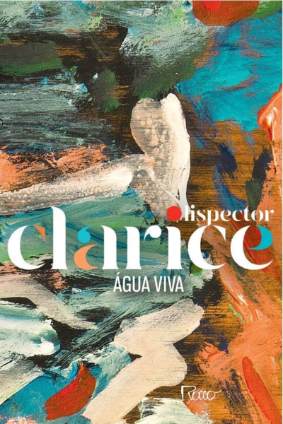
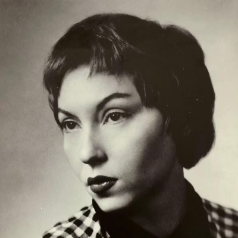
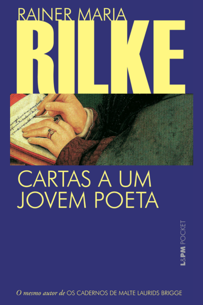
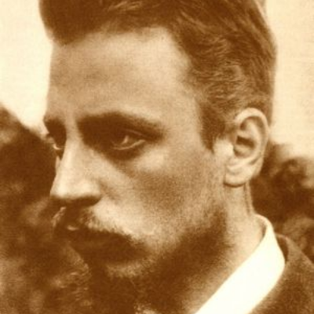
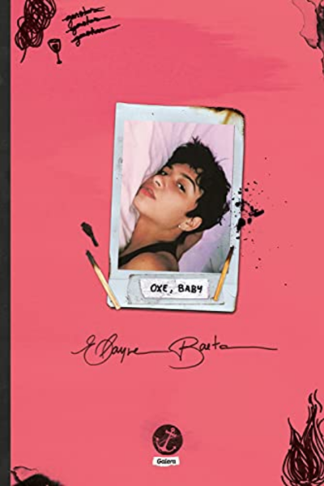
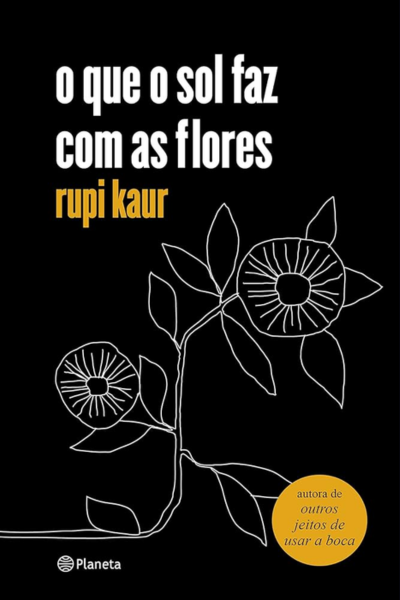
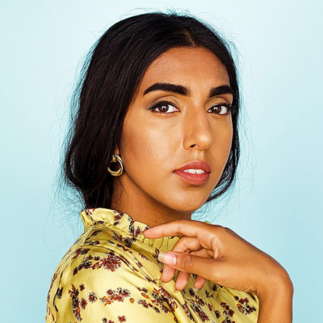
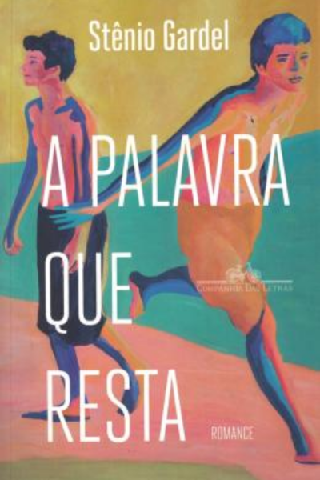

Livros
Sou uma pessoa que gosta muito de ler e tem esse exercício como algo muito prazeroso e bom de ser feito. Não sou o tipo de leitora que gosta de acumular títulos e páginas lidas em determinado peíodo de tempo: ainda que eu entenda a literatura também como um lugar de denúncia social e aprecie muito textos assim, sou adepta à leitura pela leitura. Clarice me ensinou isso. Não se lê para entender, se lê para sentir. O processo da leitura gera em mim sentimentos indizíveis e é por isso que eu continuo o buscando.

Água Viva

Gênero: Romance psicológico
Palavras chave: Consciência, tempo, existência, sentimento, amor, sofrimento, detalhe, It, vida, morte
Autora: Clarice Lispector

Cartas a um jovem poeta

Gênero: Poesia; Biografia
Palavras chave: Existência, solidão, prazer, escrita, palavra, amor, poesia
Autor: Rainer Maria Rilke

Oxe, baby

Gênero: Poesia; Ficção; Ficção lésbica
Palavras chave: Descoberta, paixão, amor, raiva, aceitação, heteronormatividade, homossexualidade, orgulho
Autora: Elayne Baeta

O que o sol faz com as flores

Gênero: Poesia; Ficção; Romance de amor
Palavras chave: Ancestralidade, sororidade, abuso, desigualdade, amor, violência, relacionamentos, amor próprio
Autora: Rupi Kaur

A palavra que resta

Gênero: Ficção gay
Palavras chave: Preconceito, analfabetismo, palavra, desigualdade, violência, marginalização, doutrinação, enigma, falta
Autor: Stênio Gardel